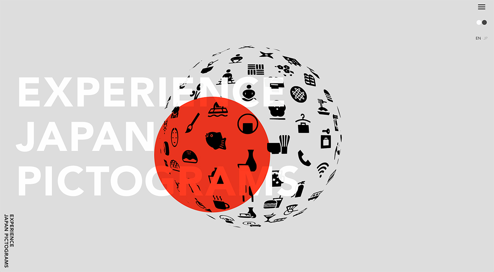
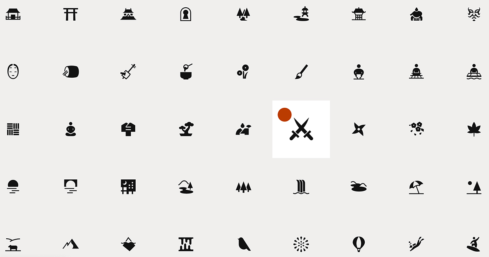
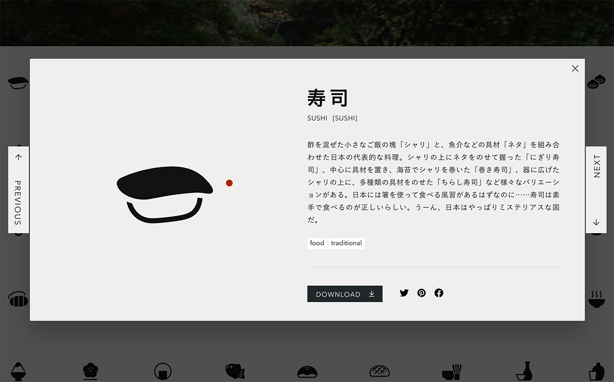

Today's Topic
可愛い！日本のピクトグラム
日本デザインセンターで面白い展示がやっているよと、大瀧さん教えてもらい先週の火曜日に足を運んでみました。デザインセンターが関わった企画・デザインの一部が展示されていたのですが、今日はその展示の中で気になったものをご紹介しようと思います。
気になった事例は、「日本のピクトグラム」を企画・制作をしたものでした。ピクトグラムを無料でダウンロードさせてくれるサイトになっていますが、ここでは「日本の観光をデザインで支える」というミッションのもと、日本の体験を一歩深く掘り下げた独自性あるピクトグラムを展開しています。寿司・座禅・伊勢神宮。。ありとあらゆるものが美しくシンプルなピクトグラムで表現されています。

数が結構あります。条件はあるけれど、商用にも使用できるようです。これだけのクオリティのものが使い放題なのは嬉しいですよね。しかも、色を変えたり、背景をつけたり、様々な形でダウンロードすることができるようです。

ピクトグラム一つ一つにはこうやって説明・物語がついています。ダウンロードする必要がなくても、これはつい見てしまいますね。確かに、寿司って手で食べるの何で何だろう。。
みなさんも気になるピクトグラムがあれば、内容も併せてチェックしてみてくださいね。